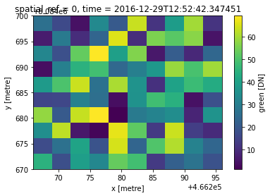
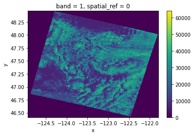

Example - Reproject
To re-project with dask, see odc-geo & pyresample.
[1]:
import rioxarray # for the extension to load
import xarray
import rasterio
%matplotlib inline
Load in xarray dataset
[2]:
xds = xarray.open_dataset("../../test/test_data/input/PLANET_SCOPE_3D.nc", decode_coords="all")
[3]:
xds
[3]:
<xarray.Dataset>
Dimensions: (time: 2, x: 10, y: 10)
Coordinates:
spatial_ref int64 0
* x (x) float64 4.663e+05 4.663e+05 ... 4.663e+05 4.663e+05
* time (time) datetime64[ns] 2016-12-19T10:27:29.687763 2016-12-29T...
* y (y) float64 8.085e+06 8.085e+06 ... 8.085e+06 8.085e+06
Data variables:
blue (time, y, x) float64 6.611 5.581 0.3996 ... 3.491 5.056 3.368
green (time, y, x) float64 7.921 66.15 30.1 ... 21.76 27.29 18.41xarray.Dataset
- time: 2
- x: 10
- y: 10
- spatial_ref()int64...
- spatial_ref :
- PROJCS["WGS 84 / UTM zone 22S",GEOGCS["WGS 84",DATUM["WGS_1984",SPHEROID["WGS 84",6378137,298.257223563,AUTHORITY["EPSG","7030"]],AUTHORITY["EPSG","6326"]],PRIMEM["Greenwich",0,AUTHORITY["EPSG","8901"]],UNIT["degree",0.0174532925199433,AUTHORITY["EPSG","9122"]],AUTHORITY["EPSG","4326"]],PROJECTION["Transverse_Mercator"],PARAMETER["latitude_of_origin",0],PARAMETER["central_meridian",-51],PARAMETER["scale_factor",0.9996],PARAMETER["false_easting",500000],PARAMETER["false_northing",10000000],UNIT["metre",1,AUTHORITY["EPSG","9001"]],AXIS["Easting",EAST],AXIS["Northing",NORTH],AUTHORITY["EPSG","32722"]]
array(0)
- x(x)float644.663e+05 4.663e+05 ... 4.663e+05
- units :
- metre
array([466267.5, 466270.5, 466273.5, 466276.5, 466279.5, 466282.5, 466285.5, 466288.5, 466291.5, 466294.5]) - time(time)datetime64[ns]2016-12-19T10:27:29.687763 2016-...
array(['2016-12-19T10:27:29.687763000', '2016-12-29T12:52:42.347451000'], dtype='datetime64[ns]') - y(y)float648.085e+06 8.085e+06 ... 8.085e+06
- units :
- metre
array([8084698.5, 8084695.5, 8084692.5, 8084689.5, 8084686.5, 8084683.5, 8084680.5, 8084677.5, 8084674.5, 8084671.5])
- blue(time, y, x)float64...
- units :
- DN
- nodata :
- 0.0
array([[[6.611017, 5.580979, 0.399607, 2.052803, 5.479985, 4.760219, 5.077927, 5.574792, 0.726683, 5.170288], [4.535516, 0.088263, 4.222302, 0.289199, 3.478147, 3.227945, 2.736443, 2.821799, 1.04221 , 1.099616], [0.071364, 4.393267, 0.496907, 2.311926, 1.19123 , 5.984189, 5.266977, 1.146988, 3.219185, 0.982011], [5.818552, 5.176065, 4.891903, 4.557147, 4.706706, 4.670835, 2.344188, 0.493237, 2.707488, 4.15662 ], [0.78458 , 3.838047, 0.803847, 1.588861, 5.002692, 2.565792, 5.195116, 2.642173, 1.47148 , 6.854931], [4.407593, 6.734126, 3.702884, 4.682068, 0.498895, 2.931409, 5.713952, 6.388658, 6.618634, 3.267176], [6.175152, 2.331721, 6.829246, 1.650656, 5.530157, 0.167316, 6.406627, 4.559968, 0.083601, 1.231478], [2.438085, 1.593681, 5.902827, 2.124327, 1.870033, 4.519462, 4.845505, 6.214475, 2.237778, 4.178488], [5.855639, 5.824333, 6.006212, 5.43411 , 3.393885, 6.183958, 1.284061, 0.028555, 6.726706, 1.516993], [0.844103, 5.61329 , 6.978045, 1.183779, 2.539376, 1.268038, 1.27574 , 5.101129, 2.020225, 2.081746]], [[6.242907, 6.394763, 1.302492, 2.895077, 0.537664, 5.012127, 4.380069, 1.624007, 5.56236 , 4.303491], [6.745937, 3.653031, 5.116965, 1.835256, 3.514732, 6.523679, 0.17986 , 2.444248, 5.169099, 0.584623], [2.119518, 0.479052, 4.274714, 6.019049, 6.346329, 2.858441, 3.976887, 4.218218, 4.320734, 3.941107], [2.974649, 6.67996 , 3.16875 , 3.507162, 2.909711, 1.359386, 4.023015, 0.258809, 2.007625, 5.744746], [2.572982, 1.250802, 4.652006, 6.310958, 3.266477, 3.216613, 3.47315 , 1.713415, 5.9575 , 2.729016], [2.743341, 4.203021, 1.306215, 2.840115, 5.351451, 2.774677, 2.621753, 5.288077, 0.722618, 4.086008], [3.168672, 4.031863, 5.775087, 3.487762, 6.034522, 4.721887, 5.093018, 0.386024, 2.278799, 1.536351], [4.548959, 4.797754, 6.371152, 3.69425 , 6.855343, 1.987757, 4.749654, 1.750539, 1.804795, 4.966536], [1.78139 , 1.544275, 1.750026, 3.373274, 2.604254, 5.894015, 3.217723, 5.637478, 2.900347, 2.097813], [1.844174, 6.994962, 2.504717, 5.292132, 0.184411, 4.870834, 1.888442, 3.491315, 5.055704, 3.368395]]]) - green(time, y, x)float64...
- units :
- DN
- nodata :
- 0.0
array([[[ 7.920639, 66.150832, 30.096116, 30.437197, 57.794734, 11.538647, 14.426782, 35.593171, 53.784858, 0.449093], [23.804111, 67.910347, 18.694533, 30.41474 , 68.117674, 44.906057, 62.311842, 37.485047, 57.134336, 7.52572 ], [36.653481, 39.596833, 61.07603 , 56.883093, 29.635613, 64.114699, 42.341689, 54.724789, 31.872344, 11.282554], [32.502176, 28.090549, 58.398927, 41.224019, 34.804777, 32.184565, 59.392327, 9.155824, 52.967172, 67.409236], [18.79468 , 8.543429, 35.834698, 3.596245, 30.252802, 41.549499, 23.060248, 7.267762, 27.374099, 0.684024], [ 9.93227 , 44.509446, 22.01927 , 28.514121, 36.715233, 15.03939 , 2.43399 , 0.636075, 34.43023 , 37.024545], [28.874823, 1.514255, 34.210822, 10.49793 , 54.025491, 64.294026, 36.212813, 17.766628, 45.295952, 10.349576], [58.961924, 47.334638, 64.844646, 37.634131, 7.815025, 35.139303, 18.501505, 35.01185 , 27.761908, 13.240655], [49.544668, 57.716538, 27.389778, 11.604377, 24.826367, 15.449456, 26.482386, 42.855739, 10.4958 , 59.267182], [37.094093, 43.294246, 33.240747, 16.85513 , 54.705119, 14.633291, 35.138742, 50.101683, 57.495953, 52.795405]], [[26.137058, 16.448086, 4.503539, 33.351036, 20.32524 , 63.369743, 11.531512, 38.629561, 59.821441, 11.547508], [ 6.438471, 28.948907, 9.949052, 23.234921, 65.539507, 9.822554, 55.754023, 51.590388, 57.047098, 4.929671], [32.360472, 17.939979, 52.889505, 69.181176, 39.2923 , 56.442225, 5.699603, 21.092554, 8.93472 , 23.810367], [ 3.715695, 30.653733, 44.540496, 48.578544, 24.032477, 30.339109, 37.376636, 58.787274, 49.308994, 59.510765], [37.991912, 50.023013, 63.711135, 26.546118, 60.561058, 36.098302, 10.725673, 40.51609 , 47.479255, 42.710909], [15.32887 , 15.878984, 30.914778, 25.902812, 3.815428, 35.530366, 48.426293, 44.280075, 4.468083, 18.00032 ], [58.286993, 20.397714, 63.124 , 69.117495, 1.32436 , 29.024715, 31.601531, 34.307982, 7.990292, 36.159696], [34.674335, 62.344993, 5.714717, 2.161448, 66.714977, 52.443751, 12.791859, 63.707491, 13.697063, 9.394474], [16.766346, 26.260123, 40.68158 , 18.695085, 64.812126, 23.151592, 50.597642, 61.308205, 31.517123, 23.469797], [44.670989, 17.533084, 39.034907, 32.676726, 53.275139, 48.731172, 12.958856, 21.760335, 27.292202, 18.409063]]])
[4]:
xds.green.where(xds.green!=xds.green.rio.nodata).isel(time=1).plot()
[4]:
<matplotlib.collections.QuadMesh at 0x7f8f13620880>

Reproject
API Reference:
DataArray: rio.reproject()
Dataset: rio.reproject()
[5]:
xds_lonlat = xds.rio.reproject("EPSG:4326")
[6]:
xds_lonlat
[6]:
<xarray.Dataset>
Dimensions: (time: 2, x: 10, y: 10)
Coordinates:
* x (x) float64 -51.32 -51.32 -51.32 ... -51.32 -51.32 -51.32
* y (y) float64 -17.32 -17.32 -17.32 ... -17.32 -17.32 -17.32
* time (time) datetime64[ns] 2016-12-19T10:27:29.687763 2016-12-29T...
spatial_ref int64 0
Data variables:
blue (time, y, x) float64 6.611 5.581 0.3996 ... 3.491 5.056 3.368
green (time, y, x) float64 7.921 66.15 30.1 ... 21.76 27.29 18.41xarray.Dataset
- time: 2
- x: 10
- y: 10
- x(x)float64-51.32 -51.32 ... -51.32 -51.32
- axis :
- X
- long_name :
- longitude
- standard_name :
- longitude
- units :
- degrees_east
array([-51.317454, -51.317426, -51.317399, -51.317371, -51.317343, -51.317316, -51.317288, -51.31726 , -51.317233, -51.317205]) - y(y)float64-17.32 -17.32 ... -17.32 -17.32
- axis :
- Y
- long_name :
- latitude
- standard_name :
- latitude
- units :
- degrees_north
array([-17.322876, -17.322903, -17.322931, -17.322959, -17.322986, -17.323014, -17.323042, -17.323069, -17.323097, -17.323125]) - time(time)datetime64[ns]2016-12-19T10:27:29.687763 2016-...
array(['2016-12-19T10:27:29.687763000', '2016-12-29T12:52:42.347451000'], dtype='datetime64[ns]') - spatial_ref()int640
- crs_wkt :
- GEOGCS["WGS 84",DATUM["WGS_1984",SPHEROID["WGS 84",6378137,298.257223563,AUTHORITY["EPSG","7030"]],AUTHORITY["EPSG","6326"]],PRIMEM["Greenwich",0,AUTHORITY["EPSG","8901"]],UNIT["degree",0.0174532925199433,AUTHORITY["EPSG","9122"]],AXIS["Latitude",NORTH],AXIS["Longitude",EAST],AUTHORITY["EPSG","4326"]]
- semi_major_axis :
- 6378137.0
- semi_minor_axis :
- 6356752.314245179
- inverse_flattening :
- 298.257223563
- reference_ellipsoid_name :
- WGS 84
- longitude_of_prime_meridian :
- 0.0
- prime_meridian_name :
- Greenwich
- geographic_crs_name :
- WGS 84
- grid_mapping_name :
- latitude_longitude
- spatial_ref :
- GEOGCS["WGS 84",DATUM["WGS_1984",SPHEROID["WGS 84",6378137,298.257223563,AUTHORITY["EPSG","7030"]],AUTHORITY["EPSG","6326"]],PRIMEM["Greenwich",0,AUTHORITY["EPSG","8901"]],UNIT["degree",0.0174532925199433,AUTHORITY["EPSG","9122"]],AXIS["Latitude",NORTH],AXIS["Longitude",EAST],AUTHORITY["EPSG","4326"]]
- GeoTransform :
- -51.31746780720891 2.7678699822269306e-05 0.0 -17.322861663733065 0.0 -2.7678699822269306e-05
array(0)
- blue(time, y, x)float646.611 5.581 0.3996 ... 5.056 3.368
- units :
- DN
array([[[6.61101706, 5.58097901, 0.39960727, 2.05280345, 5.47998484, 4.76021916, 5.07792715, 5.57479217, 0.72668295, 5.17028805], [4.53551623, 0.08826297, 4.22230213, 0.28919903, 3.47814709, 3.22794508, 2.73644333, 2.82179869, 1.04221025, 1.09961647], [0.07136352, 4.39326719, 0.49690677, 2.31192634, 1.19123023, 5.98418893, 5.26697738, 1.14698827, 3.21918509, 0.98201077], [5.81855223, 5.17606488, 4.89190312, 4.55714657, 4.70670585, 4.67083516, 2.34418779, 0.4932369 , 2.70748782, 4.15661977], [0.78457995, 3.83804728, 0.80384702, 1.58886148, 5.00269192, 2.56579153, 5.19511563, 2.6421726 , 1.47148022, 6.85493052], [4.40759261, 6.73412648, 3.70288412, 4.68206812, 0.49889505, 2.93140894, 5.71395224, 6.38865828, 6.61863439, 3.26717611], [6.17515163, 2.33172093, 6.82924574, 1.65065578, 5.53015689, 0.16731611, 6.40662729, 4.55996818, 0.08360072, 1.23147801], [2.43808458, 1.59368058, 5.90282702, 2.12432736, 1.8700329 , 4.51946233, 4.84550488, 6.21447495, 2.23777817, 4.17848811], [5.85563919, 5.82433331, 6.00621159, 5.43410984, 3.39388501, 6.18395763, 1.28406097, 0.02855524, 6.72670605, 1.51699291], [0.84410255, 5.61328959, 6.97804534, 1.18377926, 2.53937552, 1.26803824, 1.27574049, 5.10112907, 2.02022521, 2.08174614]], ... [[6.24290664, 6.39476317, 1.30249235, 2.89507681, 0.5376643 , 5.01212706, 4.38006939, 1.62400749, 5.56236028, 4.30349107], [6.74593668, 3.65303136, 5.11696455, 1.83525557, 3.51473159, 6.52367921, 0.17986011, 2.44424775, 5.16909939, 0.58462293], [2.11951807, 0.47905249, 4.27471358, 6.01904917, 6.34632929, 2.85844128, 3.97688665, 4.21821752, 4.32073426, 3.9411069 ], [2.97464873, 6.67996018, 3.16875018, 3.50716191, 2.9097115 , 1.35938603, 4.0230148 , 0.2588095 , 2.00762528, 5.74474576], [2.57298212, 1.25080228, 4.65200582, 6.31095753, 3.26647688, 3.21661254, 3.4731501 , 1.71341466, 5.95750029, 2.72901564], [2.74334064, 4.20302139, 1.30621538, 2.84011532, 5.35145147, 2.77467654, 2.6217532 , 5.28807657, 0.72261773, 4.08600786], [3.1686723 , 4.0318634 , 5.77508699, 3.48776179, 6.0345218 , 4.72188719, 5.09301838, 0.38602444, 2.27879875, 1.5363515 ], [4.54895876, 4.79775447, 6.3711522 , 3.69424969, 6.85534296, 1.98775739, 4.74965416, 1.75053883, 1.80479493, 4.96653593], [1.78138972, 1.54427475, 1.75002571, 3.37327355, 2.60425433, 5.89401538, 3.2177233 , 5.63747771, 2.90034677, 2.09781306], [1.84417405, 6.99496234, 2.50471667, 5.29213205, 0.1844106 , 4.87083388, 1.88844217, 3.49131529, 5.05570379, 3.36839469]]]) - green(time, y, x)float647.921 66.15 30.1 ... 27.29 18.41
- units :
- DN
array([[[ 7.92063876, 66.15083163, 30.09611622, 30.43719706, 57.79473407, 11.53864677, 14.42678195, 35.5931706 , 53.78485769, 0.44909335], [23.80411143, 67.91034696, 18.6945325 , 30.41473977, 68.11767437, 44.90605663, 62.31184244, 37.48504719, 57.13433649, 7.52571983], [36.65348061, 39.59683262, 61.07602968, 56.88309328, 29.63561283, 64.11469949, 42.34168918, 54.7247894 , 31.87234425, 11.28255401], [32.50217644, 28.0905485 , 58.39892665, 41.22401876, 34.80477692, 32.18456541, 59.39232697, 9.15582412, 52.96717208, 67.40923645], [18.79468009, 8.54342894, 35.83469773, 3.59624497, 30.25280185, 41.54949902, 23.06024792, 7.26776162, 27.37409939, 0.68402392], [ 9.93226996, 44.50944555, 22.01927024, 28.5141208 , 36.71523344, 15.03939035, 2.43398964, 0.63607503, 34.43022974, 37.02454468], [28.87482271, 1.51425484, 34.21082199, 10.49792965, 54.02549098, 64.29402555, 36.21281265, 17.76662845, ... 24.03247674, 30.33910879, 37.37663568, 58.78727396, 49.30899357, 59.51076479], [37.99191205, 50.0230132 , 63.71113469, 26.54611832, 60.5610581 , 36.09830221, 10.72567322, 40.51609048, 47.47925466, 42.71090946], [15.32887012, 15.8789836 , 30.91477844, 25.90281227, 3.81542846, 35.53036591, 48.42629307, 44.28007476, 4.46808288, 18.00031979], [58.28699332, 20.39771424, 63.12400017, 69.11749464, 1.32435965, 29.02471509, 31.60153124, 34.30798249, 7.99029205, 36.15969559], [34.67433533, 62.34499312, 5.71471651, 2.16144808, 66.71497747, 52.4437509 , 12.79185872, 63.70749094, 13.69706259, 9.39447357], [16.76634605, 26.26012306, 40.68158023, 18.69508482, 64.81212607, 23.15159177, 50.59764238, 61.30820521, 31.51712269, 23.46979658], [44.67098863, 17.53308399, 39.03490717, 32.67672611, 53.27513876, 48.73117231, 12.95885589, 21.760335 , 27.29220175, 18.40906318]]])
[7]:
xds_lonlat.green.where(xds_lonlat.green!=xds_lonlat.green.rio.nodata).isel(time=1).plot()
[7]:
<matplotlib.collections.QuadMesh at 0x7f8f134b63a0>

Reproject to UTM
API Reference:
[8]:
xds_utm = xds.rio.reproject(xds.rio.estimate_utm_crs())
xds_utm.rio.crs
[8]:
CRS.from_epsg(32722)
Reproject Large Rasters with Virtual Warping
Using WarpedVRT enables re-projection from disk and reduces the amount of memory required with the re-projection.
[9]:
url = (
"https://storage.googleapis.com/"
"gcp-public-data-landsat/LC08/01/047/027/"
"LC08_L1TP_047027_20130421_20170310_01_T1/"
"LC08_L1TP_047027_20130421_20170310_01_T1_B4.TIF"
)
env = rasterio.Env(
GDAL_DISABLE_READDIR_ON_OPEN="EMPTY_DIR",
CPL_VSIL_CURL_USE_HEAD=False,
CPL_VSIL_CURL_ALLOWED_EXTENSIONS="TIF",
)
with env:
with rasterio.open(url) as src:
with rasterio.vrt.WarpedVRT(src, crs="EPSG:4326") as vrt:
rds = rioxarray.open_rasterio(vrt)
rds.sel(band=1).plot.imshow()
